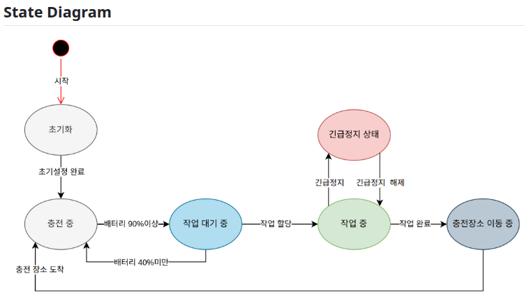
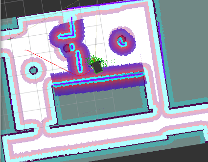
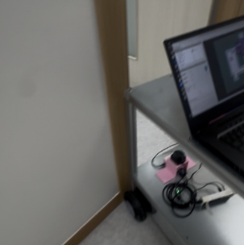
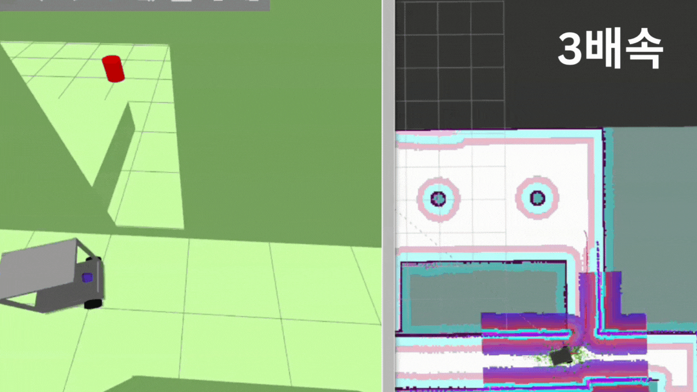
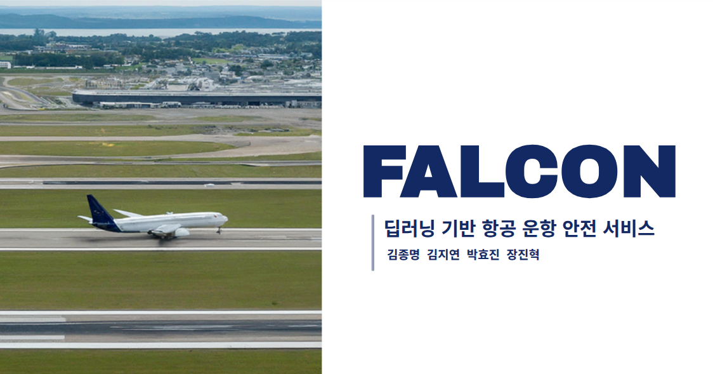

01. JAVIS (도서관/카페 서비스 로봇)

도서관, 카페 등 복합적이고 좁은 실내 환경에서 단순 주행을 넘어 안내, 서가 정리 등 구체적인 임무를 수행할 수 있는 통합 로봇 시스템 구축을 목표로 개발


State Machine 기반으로 로봇를 제어하고 예외 상황(배터리, 충돌)을 고려해 설계하여 안정성을 확보하고 Main Controller 전용 GUI 툴을 개발해 로봇 내부 상태를 시각화 및 검증


AI, 주행, 암 제어 등 하위 시스템과의 통신 규약을 추상화하여 타 파트의 진척도와 무관하게 개발할 수 있도록 인터페이스를 정의하고 Mock 객체를 구현하여 테스트시 병목현상을 예방


Navigation Stack 분석을 기반으로 Costmap 파라미터 튜닝 및 다양한 컨트롤러 비교 검증을 수행하여 좁은 통로와 복잡한 서가 환경에서의 주행 성능을 최적화
01. JAVIS - Trouble Shooting


• Cost Scaling: 좁은 통로를 '진입 불가'가 아닌 '고비용 구역'으로 설정하여 안전 마진을 확보하며 주행 성공
• Result: 복잡한 환경에서는 감속 회피, 넓은 곳에서는 고속 주행하는 유연성 확보
02. ROOMIE (호텔 실내 서비스 로봇)

호텔 객실 배송 서비스와 기존 엘리베이터 연동 API 의존성을 탈피하고 별도의 통신 인프라 없이 로봇이 영상을 인식하고 물리적으로 버튼을 조작하여 층간 이동이 가능한 독립적 주행 시스템을 목표로 개발
카메라 좌표(Vision)와 엔드 이펙터(EE)사이에 켈리브레이션 행렬과 변환 행렬을 설정하여 좌표를 변환하고 엔드 이펙터(EE)와 로봇팔 베이스의 관절 각도(Joint)를 ikpy와 휴리스틱 기반으로 관절 각도 계산
카메라로 인식한 2D 버튼 좌표를 OpenCV라이브러리를 사용하여 3D 공간 좌표로 실시간 변환하여 로봇팔이 목표를 추종하도록 제어
Jira를 도입하여 스프린트 단위로 이슈를 관리하여 프로젝트 개발 가속도를 높임
02. ROOMIE - Technical Challenges
• Result: 잔진동을 90% 이상 제거하고 기어 마모 방지 효과 확인
• Two-Step Control: '중심 정렬(Align)' 후 '전진(Push)'하는 2단계 제어로 정확도 향상
03. FALCON (항공 운항 AI 안전 서비스)

활주로 내 이물질(FOD)과 무단 침입자를 CCTV로 실시간 감지하고 관제사가 즉각 대응할 수 있도록 위험물의 정확한 구역 위치(GPS/Map 좌표)를 제공하는 관제 시스템을 구축
YOLO v8 커스텀 학습(90%↑) 및 ByteTrack 알고리즘을 적용하여 객체 ID 유지 및 이동 경로 추적 구현
Homography(원근 변환) 기법으로 CCTV의 2D 픽셀 좌표를 실제 지도의 거리 단위(Meter)로 변환하여 구역별 위치 정보 제공
HSV 색상 분할 기법을 적용하여 형광 조끼 착용 여부를 판단, 인가된 작업자와 침입자를 구분
03. FALCON - Technical Challenges
• Result: 픽셀 좌표를 실제 미터(Meter) 단위로 변환, 오차 범위 ±0.5cm 정밀도 확보
• Result: 가상 데이터 학습 모델을 실제 환경에 적용 시 90% 이상의 높은 검출률 달성
04. Visual SLAM Basic (개인 연구)

단일 2D LiDAR 사용 시 특징점이 부족한 긴 복도나 유리 환경에서 발생하는 매핑 실패(Drift) 현상을 극복하기 위해 Visual SLAM(RGB-D) 기술을 도입하고 하드웨어 셋업부터 내비게이션 연동까지 전체 프로세스를 검증
Orbbec Astra 카메라 장착 및 URDF 모델링을 통해 센서 간 TF 트리를 구성하고 RTAB-Map으로 LiDAR와 카메라 데이터를 융합하여 강인한 매핑 구현
Problem: 급격한 회전 시 Visual Odom 실패.
Solution: Wheel + LiDAR + Visual 데이터를 모두 융합하도록 파라미터를 튜닝하여 회전 오차 최소화